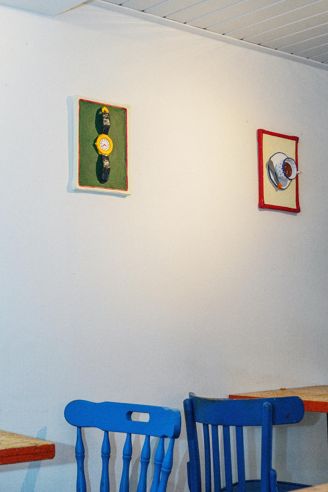
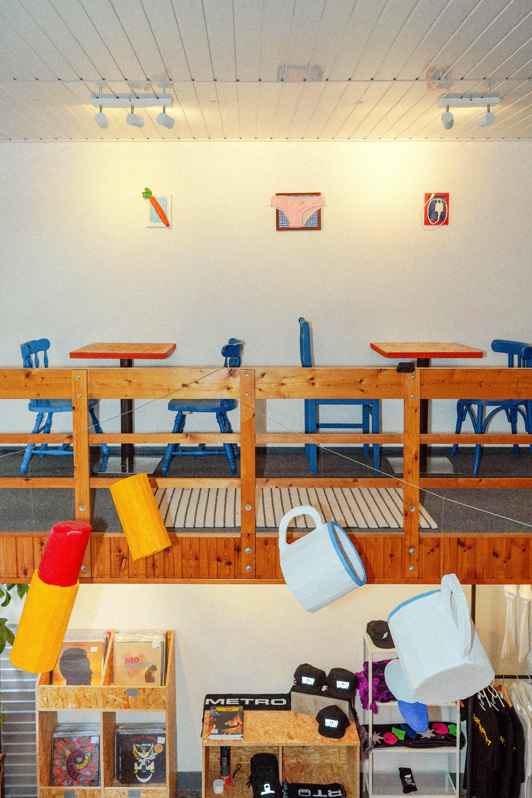

J'ai perdu mes clés, 2025
Have you ever lost your keys, eaten pasta with tomato sauce until your mouth turned orange, smoked a cigarette, cracked an egg, danced in cowboy boots?
This exhibition and window display at Chien Andalou, a coffee and art space, unfolds sculptural scenes in papier-mâché. Everyday gestures and familiar objects become intimate installations, inviting visitors to reconnect with their own memories.
This exhibition and window display at Chien Andalou, a coffee and art space, unfolds sculptural scenes in papier-mâché. Everyday gestures and familiar objects become intimate installations, inviting visitors to reconnect with their own memories.



